DOM
use the arrow keys to navigate; press space for slide overviewDOM
Intro
Scripts recap (1)
-
Link your scripts at the bottom, vendor scripts first, your scripts last:
<!DOCTYPE html> <html> <head> <title>How to include scripts</title> <meta charset="utf-8" /> </head> <body> ... <!-- load external libraries --> <script src="vendor/external-script-1.js"></script> <script src="vendor/external-script-2.js"></script> <!-- load your scripts --> <script src="js/my-script.js"></script> </body> </html>
Scripts recap (2)
-
To avoid name conflicts with third party scripts, wrap your code in a function:
(function() { 'use strict'; let function1 = function() { // ... } let function2 = function() { // ... } window.addEventListener('load', function() { // start your script here // ... }); })();
The DOM
- In previous presentation, we already saw a few examples of how to interact with the HTML page and CSS here and here.
- A programmable model of the current HTML page accessible for Javascript is called the Document Object Model, in short the DOM.
- In early days browser DOM support used to be disastrous, but today you don't have to worry about browser differences (at least not in this course)
Trees (1)
- Before we talk about DOM, some terms used in tree structures:
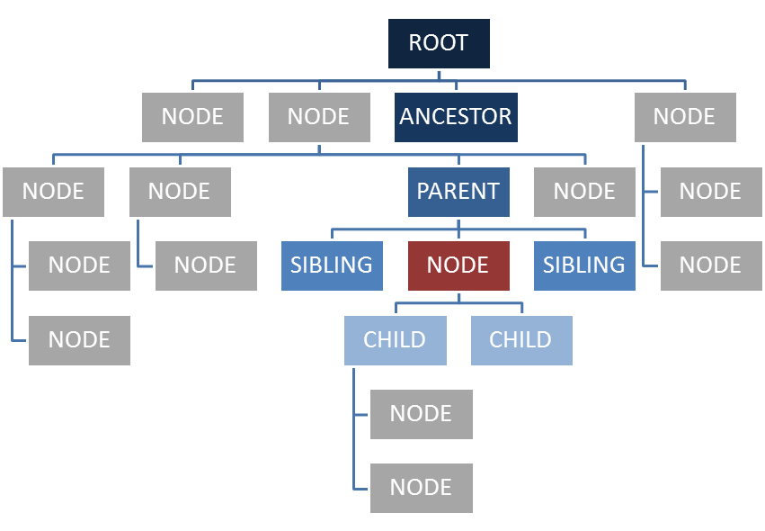
Trees (2)
- Some more terms:
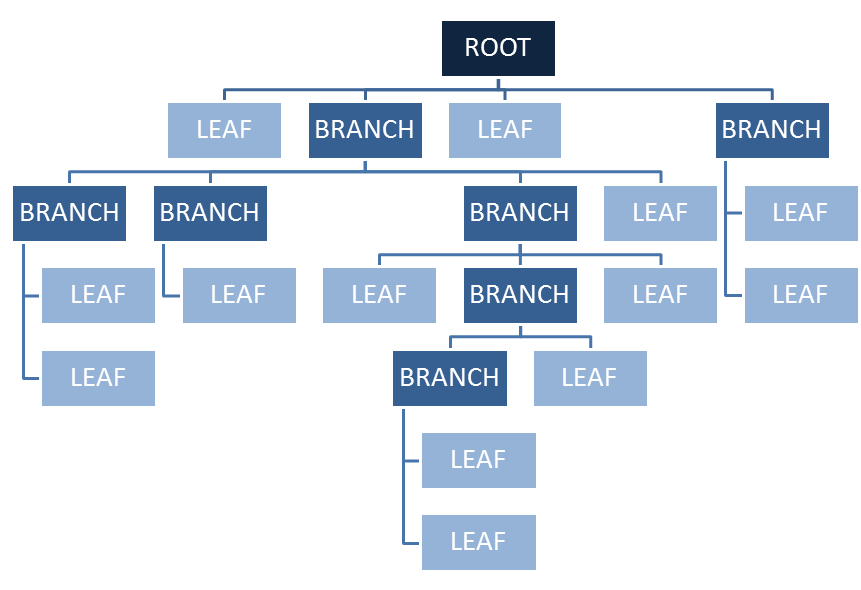
DOM — full version
- The actual DOM is, well, quite complex:
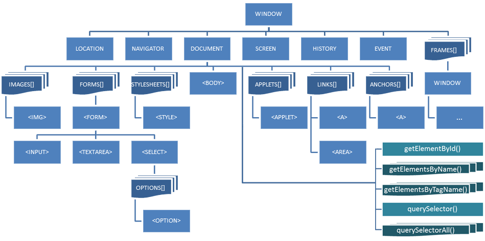
This tree looks weird, and it actually is. It contains some elements like forms, images, applets, the body etc... but many other elements are missing like tables, divs, the head etc...
The reason is that the blueprint of this tree representation isn't the result of a logical process, but has rather grown organically in a time no real standard existed on the background of a full-scale browser war between Netscape and Internet Explorer. By the time the W3C jumped in to develop a standard, they had no choice but use a compromise between the IE and NN DOM models instead of starting from scratch.
DOM — final version
-
Luckily, we just need a small part of it:

DOM — nodes
-
Each element of the DOM has
- properties like
width,value,srcetc... (some are read/write, others are read only) - methods like
submit(),focus()etc.. (which are actually properties too) - events like
onclick,onchange,onloadetc...
- properties like
- The properties, methods and events you can use, depend on the type of node (image, input...)
- The best hands-on DOM reference I know is W3Schools
DOM — documentation
DOM — window
DOM — window
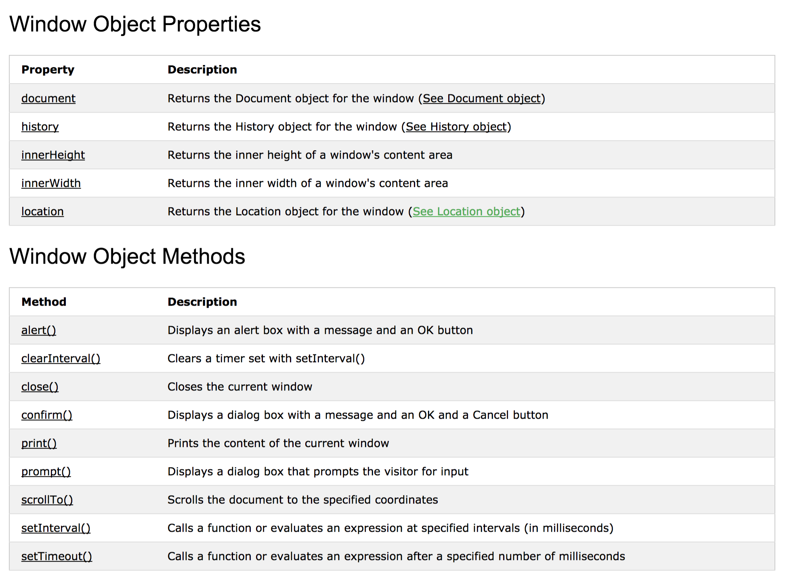 → full listing hereDOM — window
-
Using properties:
console.log('kader: ' + window.innerWidth + 'x' + window.innerHeight); -
Using Methods:
window.alert('hi'); if (window.confirm('print this page?')) window.print(); -
As
windowis the root of any path, you may omit this:console.log('kader: ' + innerWidth + 'x' + innerHeight); alert('hi'); if (confirm('print this page?')) print();
DOM — history
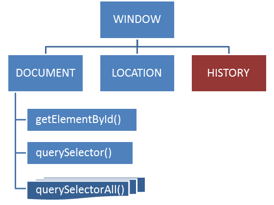DOM — history
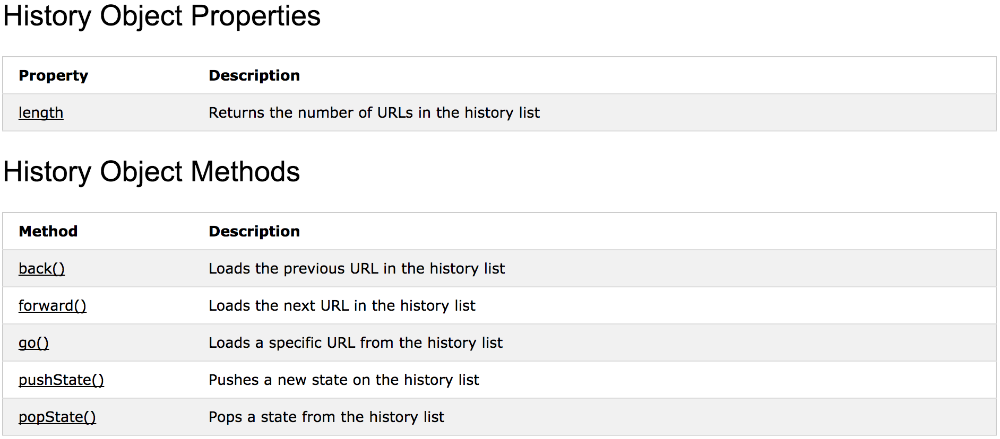 → full listing hereDOM — history
-
You are not supposed to mess with browser history:
history.back(); // don't use this! - Since HTML5 however this node contains some interesting new methods like pushState() and popState(), which can be used to maintain browsing history logic in rich Javascript applications. This falls outside the scope of this course.
DOM — location
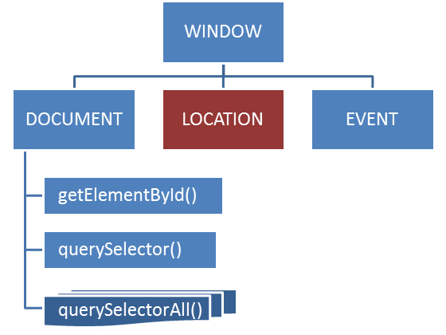DOM — location
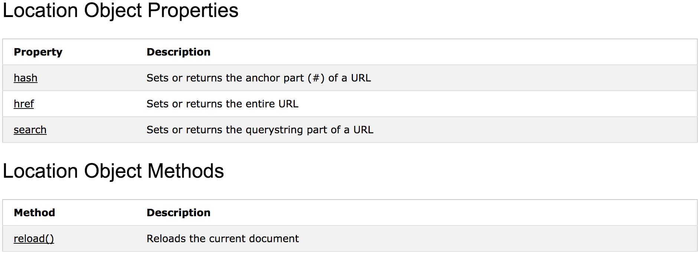 → full listing hereDOM — location
-
Refers to the address bar. Example forcing a redirect:
location.href = 'http://www.google.be'; -
Return page hash:
console.log(location.hash); -
Reload the page:
location.reload();
DOM — document
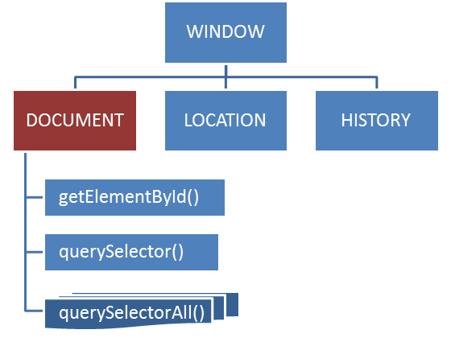DOM — document
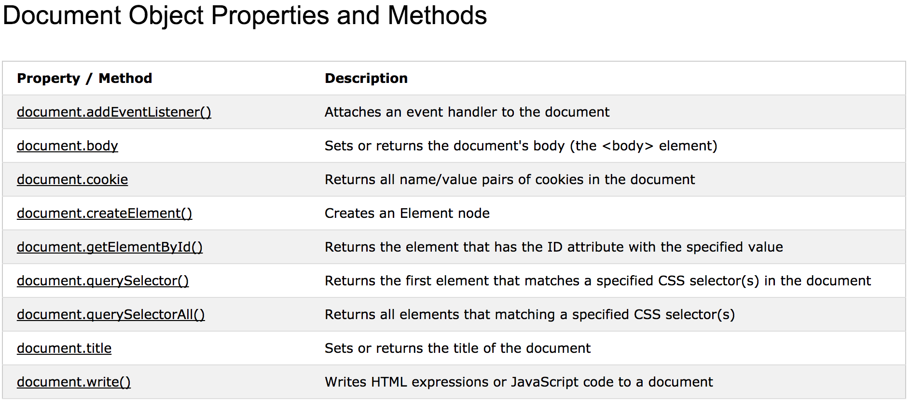 → full listing hereDOM — document
-
This node carries the entire HTML document. The node itself is rather uninteresting, with only a few properties and methods (apart from the selector functions we'll talk about in a minute):
document.title = "hello there";document.write('kot kot kedei'); // beware: this page will be overwritten
DOM — finding an element
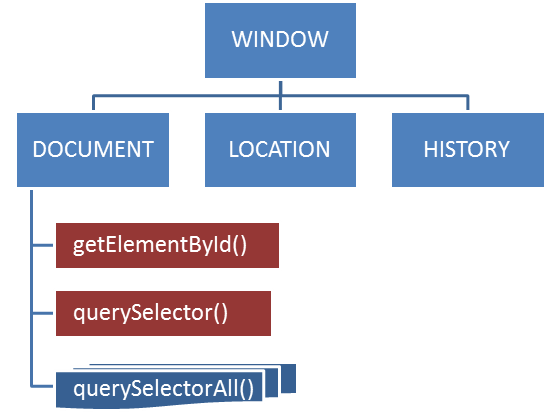DOM — finding an element
-
Find individual elements by id or CSS selector:
// get element by its id let button1 = document.getElementById('btnOk'); // get first element matched by CSS selector let el = document.querySelector('#siteWrapper pre.bigger:last'); -
You can search inside any element, not just
document:// find menu wrapper let wrapper = document.getElementById('#menuWrapper'); // find active link inside wrapper let activeLink = wrapper.querySelector('#siteWrapper li.active a');
DOM — collections

DOM — collections
-
Find multiple elements — collections — by CSS selector:
// find all images within gallery let galleryImgs = document.querySelectorAll('#myGallery img'); // find all checked checkboxes let inpChecked = document.querySelectorAll('input[type=checkbox]:checked'); -
Treat collections as classic arrays:
// find all elements with a src attribute let srcElements = document.querySelectorAll('*[src]'); // access third element console.log(srcElements[2]); // iterate with normal for-loop for (let i = 0; i < srcElements.length; i++) { console.log(srcElements[i].nodeName + ': ' + srcElements[i].src); }
DOM — collections
-
Alas, properties do not distribute:
// find images let galleryImgs = document.querySelectorAll('#myGallery img'); // set opacity of all to 0.8 -> does not work! galleryImgs.style.opacity = '0.8'; -
You will have to iterate manually:
// find images let galleryImgs = document.querySelectorAll('#myGallery img'); // set opacity one by one -> works for (let i = 0; i < galleryImgs.length; i++) { galleryImgs[i].style.opacity = '0.8'; }
DOM
Manipulating the DOM
DOM — documentation
- Most interesting properties and methods for DOM Elements: 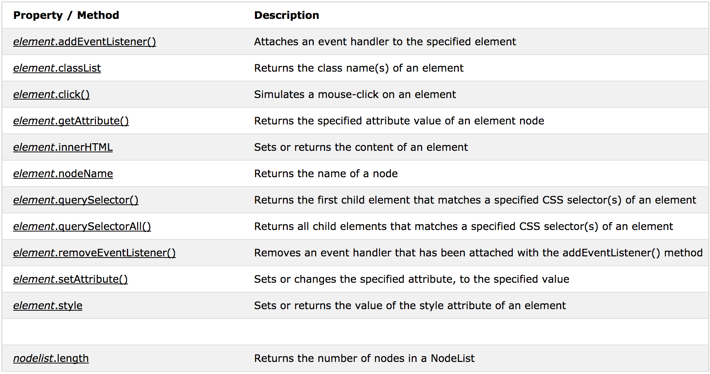 → full listing here
DOM — documentation
- For individual elements, additional properties and methods exist, e.g. for DOM Input Checkbox: 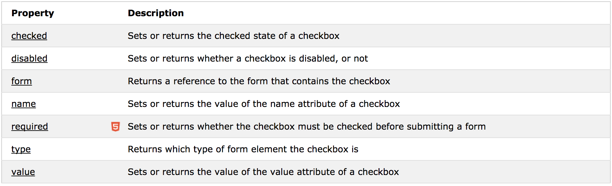 → full listing here
Manipulating CSS and content
-
Some of the common properties and events for elements:
// cache the variable let el = document.getElementById('manipulatingDemo'); // change CSS properties (note: camelCased!) el.style.backgroundColor = '#cc6'; el.style.padding = '20px'; // set 'test' as classname el.className = 'test'; // or better: el.classList.add('test'); el.innerHTML = 'I am THE demo'; // add some events el.addEventListener('mouseover', function() { this.innerHTML = 'Hammertime'; }); el.addEventListener('mouseout', function() { this.innerHTML = 'Can\'t touch this'; });I am the demo
To run the demo, click 'run' first, then hover over the 'I am the demo' text below
Manipulating properties
-
There's a wide variety of elements: images, links, buttons, divs... Each may have its own additional properties, events and methods. Some examples:
<form id="demoForm1"> <label>Yes/no: <input type="checkbox" name="chb1" id="chb1" /></label>; </form> <img src="img/02_dom/me.jpg" id="img1" width="40" height="40" />document.getElementById('chb1').checked = true;document.getElementById('img1').width = 20;
- Again, w3schools.com has an excellent DOM reference
DOM
Event handling
Events — documentation
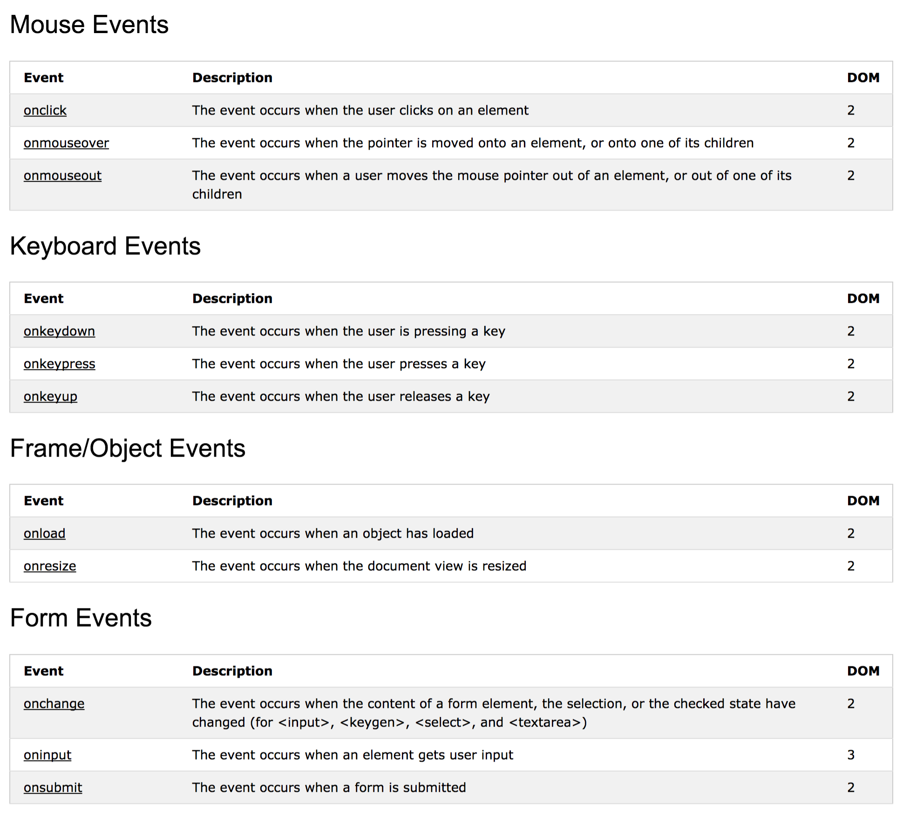 → full listing hereAttaching events
-
Some examples:
let par = document.getElementById('eventsDemo'); par.addEventListener('click', function() { console.log('You clicked me!'); }); par.addEventListener('mouseover', function() { this.style.backgroundColor = '#333'; this.style.color = 'white'; }); par.addEventListener('mouseout', function() { this.style.backgroundColor = ''; this.style.color = 'black'; });I am the demo
- event names are used without 'on', e.g. 'onclick' becomes 'click'
To run the demo, click 'run' first, then click on the 'I am the demo' text below
Attaching events
-
You can hook more than one function to the same event:
let par = document.getElementById('eventsDemo2'); par.addEventListener('click', function() { console.log('You clicked me (1)!'); }); par.addEventListener('click', function() { console.log('You clicked me (2)!'); });I am the demo
To run the demo, click 'run' first, then click on the 'I am the demo' text below
Attaching events
-
You may also run across the older syntax for event hooking (notice onclick instead of click):
document.getElementById('btn1').onclick = function() { ... };
- This syntax does not allow hooking more than once or removing listeners, so don't use it.
Removing events
-
You can also remove an event, but only if the attached function has a name:
let par = document.getElementById('eventsDemo3'); let clickHandler1 = function() { console.log('This is the first handler'); }; let clickHandler2 = function() { console.log('This is the second handler'); this.removeEventListener('click', clickHandler1); }; par.addEventListener('click', clickHandler1); par.addEventListener('click', clickHandler2);I am the demo
To run the demo, click 'run' first, then click on the 'I am the demo' text below multiple times
Event bubbling
-
What happens if two or more nested elements handle the same event:
<div id="nDemo"> <a href="http://www.google.be"><img src="img/02_dom/me.jpg" alt=""></a> </div>document.querySelector('#nDemo').addEventListener('click', function() { console.log('div clicked'); }); document.querySelector('#nDemo img').addEventListener('click', function() { console.log('img clicked'); }); document.querySelector('body').addEventListener('click', function() { console.log('body clicked'); }); document.querySelector('#nDemo a').addEventListener('click', function() { console.log('a clicked'); });
Prevent the default
- All events are executed from inside to outside, and finally the default browser action is executed: event bubbling.
-
If you just want to prevent the browser action, call
preventDefault()anywhere along the route:... document.querySelector('#nDemo a').addEventListener('click', function(e) { console.log('a clicked'); e.preventDefault(); });
Stop bubble propagation
-
If you want to stop bubbling, call
stopPropagation():... document.querySelector('#nDemo a').addEventListener('click', function(e) { console.log('a clicked'); e.stopPropagation(); }); -
If you want to stop both, call both:
... document.querySelector('#nDemo a').addEventListener('click', function(e) { console.log('a clicked'); e.stopPropagation(); e.preventDefault(); });
Event object properties
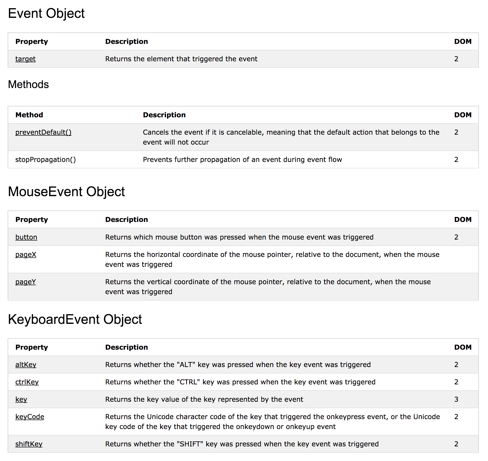 → full listing here
Note: events should be used without 'on', e.g. window.addEventListener('load', ...)
Example: target
-
At any time during bubbling you can know which top element was clicked (even if it doesn't handle the event):
... document.querySelector('body').addEventListener('click', function(e) { console.log(e.target.tagName + ' clicked'); }); -
Say you have a table with 1000 cells; instead of binding 1000 events, thanks to bubbling it's possible to bind a single handler on the <table> itself, which saves memory.
let table = document.querySelector('#bubbling'); table.addEventListener('click', function(e) { console.log('click was on ' + e.target.innerHTML); });1 2 3 4 5 6
Example: mouse
-
The
eparameter of the event listener contains information of the event. An example for mouse events:<input type="button" id="btn1" value="Left or right click me"> <script> document.getElementById('btn1').addEventListener('mousedown', function(e) { let right = e.button && e.button == 2; console.log('You clicked ' + (right ? 'right' : 'left') + ' on position (' + e.pageX + ',' + e.pageY + ')'); }); </script> - Browser incompatibility may occur. Some cross-browser scripts can be found online on quirksmode.org or use a jQuery.
Example: keyboard
-
An example for keyboard events:
<p>type something...</p> <input type="text" id="inp1" /> <script> document.getElementById('inp1').addEventListener('keypress', function(e) { console.log('You pressed ' + (e.shiftKey ? 'Shift-' : '') + e.key + ', code ' + e.keyCode); }); </script> - Browser incompatibility may occur. Some cross-browser scripts can be found online on quirksmode.org or use a jQuery.
DOM
Example 1 — Mood selector
The HTML
-
The HTML:
<!DOCTYPE html> <html> <head> <title>Moodselector</title> <meta charset="utf-8" /> <script src="js/scripts.js"></script> </head> <body> <h1>How 'r you feeling today?</h1> <form id="testForm" action="#"> <select name="lstMood" id="selMood"> <option value="0">--unknown--</option> <option value="1">darn bad</option> <option value="2">bad</option> <option value="3">neutral</option> <option value="4">good</option> <option value="5">jolly good</option> </select> <img src="img/mood0.gif" alt="mood icon" id="imgMood" /> </form> </body> </html>
Linking the script
- We'll write a simple mood selector, where selecting a value in the list changes the smiley next to it
-
We link our scripts at the end of the body:
<!DOCTYPE html> <html> <head> <title>Moodselectior</title> ... </head> <body> ... <script src="js/scripts.js"></script> </body> </html>
List change event
-
In
scripts.jswe'll hook a functionsetMood()on the change event of the list;(function() { 'use strict'; // wait till DOM is loaded window.addEventListener('load', function() { // listen to select list changes document.getElementById('lstMood').addEventListener('change', function() { setMood(this.value); }); }); })();
Adjusting the image
-
The function
setMoodis quite simple://... let setMood = function(nr) { // check boundaries if (nr < 0) nr = 0; if (nr > 5) nr = 5; // adjust image document.getElementById('imgMood').src = 'img/mood' + nr + '.gif'; //... }
DOM
Example 2 — Slideshow
HTML only version
-
We'll start from a HTML-only slideshow with a HTML file for each picture. The HTML for the first:
<!DOCTYPE html> <html> <head> <title>Show photo | Slideshow</title> <meta charset="utf-8" /> <link rel="stylesheet" href="css/reset.css" /> <link rel="stylesheet" href="css/main.css" /> </head> <body> <h2>Bekijk foto's</h2> <ul id="thumbsmenu"> <li><a href="photo1.html"><img src="img/photo1S.jpg" alt="photo 1" /></a></li> <li><a href="photo2.html"><img src="img/photo2S.jpg" alt="photo 2" /></a></li> <li><a href="photo3.html"><img src="img/photo3S.jpg" alt="photo 3" /></a></li> <li><a href="photo4.html"><img src="img/photo4S.jpg" alt="photo 4" /></a></li> </ul> <p><img src="img/photo1L.jpg" alt="photo 1" id="photoBig" /></p> </body> </html>
Linking the script
- Each time the user selects a new picture, a new page needs to be loaded. Let's improve the user experience with some Javascript.
-
Again we link our script in the body:
<!DOCTYPE html> <html> <head> <title>Slideshow</title> ... </head> <body> ... <script src="js/scripts.js"></script> </body> </html>
Click events
-
The code isn't that complicated; I'm sure you can figure this out:
window.addEventListener('load', function() { // aliases let imglinks = document.querySelectorAll('#thumbsmenu li>a'); let photoBig = document.getElementById('photoBig'); // attach events for (let i = 0; i < imglinks.length; i++) { imglinks[i].addEventListener('click', function(e) { // prevent default e.preventDefault(); // show clicked image let img = this.querySelector('img'); photoBig.src = img.src.replace('S.jpg', 'L.jpg'); photoBig.alt = img.alt; }); } });
Custom attributes
-
HTML actually allows you to add any attribute you like, as long as you prefix it with
data-. These are called custom attributes. -
Let's improve our code with custom
data-src-lattributes:<!DOCTYPE html> <html> <head> <title>Show photo | Slideshow</title> <meta charset="utf-8" /> <link rel="stylesheet" href="css/reset.css" /> <link rel="stylesheet" href="css/main.css" /> </head> <body> <h2>Bekijk foto's</h2> <ul id="thumbsmenu"> <li><a href="photo1.html"><img data-src-l="img/photo1L.jpg" src="img/photo1S.jpg" alt="photo 1" /></a></li> <li><a href="photo2.html"><img data-src-l="img/photo2L.jpg" src="img/photo2S.jpg" alt="photo 2" /></a></li> <li><a href="photo3.html"><img data-src-l="img/photo3L.jpg" src="img/photo3S.jpg" alt="photo 3" /></a></li> <li><a href="photo4.html"><img data-src-l="img/photo4L.jpg" src="img/photo4S.jpg" alt="photo 4" /></a></li> </ul> <p><img src="img/photo1L.jpg" alt="photo 1" id="photoBig" /></p> </body> </html>
Custom attributes
-
The final code is almost identical, but without the ugly
...S.jpgto...L.jpgreplace trick:window.addEventListener('load', function() { // aliases let imglinks = document.querySelectorAll('#thumbsmenu li>a'); let photoBig = document.getElementById('photoBig'); // attach events for (let i = 0; i < imglinks.length; i++) { imglinks[i].addEventListener('click', function(e) { // prevent default e.preventDefault(); // show clicked image let img = this.querySelector('img'); photoBig.src = img.getAttribute('data-src-l'); // much cleaner photoBig.alt = img.alt; }); } });
DOM
Example 3 — Formchecking
The HTML
-
Let's start with a classic HTML form:
<!DOCTYPE html> <html> <head> <title>Formchecking</title> <meta charset="utf-8" /> <link rel="stylesheet" href="demos/02_dom/fs/fonts/lato/webfont.css" /> <link rel="stylesheet" href="demos/02_dom/fs/css/styles.css" /> </head> <body> <form id="form1"> <h1>Registratie</h1> <fieldset> <legend>Adresgegevens</legend> <div class="qstn"> <label for="qstStreet">Straat en nummer *</label> <input type="text" id="qstStreet" value="" required /> <span class="message message--error" id="errStreet"> </span> </div> <div class="qstn"> <label for="qstZip">Postcode *</label> <input type="number" id="qstZip" value="" class="input--half" required /> <span class="message message--error" id="errZip"> </span> </div> <div class="qstn"> <label for="qstCity">Gemeente *</label> <input type="text" id="qstCity" value="" required /> <span class="message message--error" id="errCity"> </span> </div> </fieldset> <div class="buttons clearfix"> <input type="submit" id="btnSubmit" value="Registreren" /> </div> </form> </body> </html>
What to check
- Note that basic HTML5 validation is already in place
- Watertight form validation should happen serverside; clientside formchecking just adds a nicer experience
- Don't make clientside tests rediculously paranoia and detailed
-
We'll basically test:
- are all fieds filled?
Linking the script
-
We link our scripts at the end of the body:
<!DOCTYPE html> <html> <head> <title>Formchecking demo</title> ... </head> <body> ... <script src="js/scripts.js"></script> </body> </html>
Disabling HTML5 validation
-
We'll start form our basic script, and disable HTML5 form validation:
;(function() { 'use strict'; // wait till DOM is loaded window.addEventListener('load', function() { // disable HTML5 form validation document.getElementById('form1').setAttribute('novalidate', 'novalidate'); // formchecking starts here // ... }); })();
Intercepting the form
-
We'll intercept the form using the
submitevent; the basic validation scheme://... // listen to form submit document.getElementById('form1').addEventListener('submit', function(e) { // halt event e.preventDefault(); e.stopPropagation(); // all ok for now let isValid = true; // perform checks here // ... // draw conclusion if (isValid) { console.log('all ok'); } else { console.log('form contains errors'); } }); //...
Checking the form
-
Validating the first input:
// ... // error message shorthand let errStreet = document.getElementById('errStreet'); // input shorthand let qstStreet = document.getElementById('qstStreet'); // hide error message errStreet.style.display = 'none'; // check street and number if (qstStreet.value == '') { isValid = false; errStreet.innerHTML = 'gelieve een straat en nummer in te vullen'; errStreet.style.display = 'block'; } // ...
Full listing
-
The full script:
;(function() { 'use strict'; // wait till DOM is loaded window.addEventListener('load', function() { // disable HTML5 form validation document.getElementById('form1').setAttribute('novalidate', 'novalidate'); // intercept document submit document.getElementById('form1').addEventListener('submit', function(e) { // halt event e.preventDefault(); e.stopPropagation(); // form checking let allOk = true; // error messages shortcuts let errStreet = document.getElementById('errStreet'); let errZip = document.getElementById('errZip'); let errCity = document.getElementById('errCity'); // input shortcuts let qstStreet = document.getElementById('qstStreet'); let qstZip = document.getElementById('qstZip'); let qstCity = document.getElementById('qstCity'); // hide all error messages let errMessages = document.querySelectorAll('.message--error'); for (let i = 0; i < errMessages.length; i++) { errMessages[i].style.display = 'none'; } // check street and number if (qstStreet.value == '') { allOk = false; errStreet.innerHTML = 'gelieve een straat en nummer in te vullen'; errStreet.style.display = 'block'; } // check zip if (qstZip.value == '') { allOk = false; errZip.innerHTML = 'gelieve een postcode in te vullen'; errZip.style.display = 'block'; } // check city if (qstCity.value == '') { allOk = false; errCity.innerHTML = 'gelieve een gemeente in te vullen'; errCity.style.display = 'block'; } // draw conclusion if (allOk) { console.log('all ok'); } else { console.log('form contains errors'); } }); }); })();